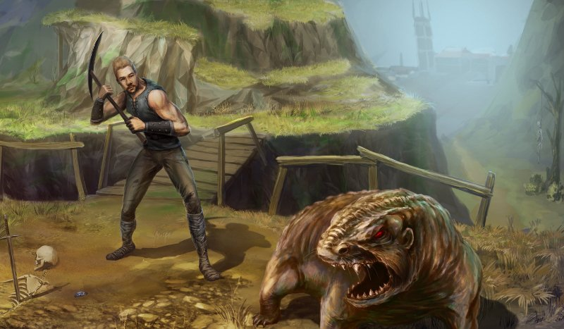

Gothic 1
Gothic 1 - pierwsza część fabularnej gry akcji z serii Gothic wyprodukowana przez firmę Piranha Bytes i wydana przez Egmont Interactive w 2001 roku. Polskie wydanie oraz lokalizację (wraz z dubbingiem) zrealizowała firma CD Projekt.
Fabuła
Akcja gry rozgrywa się w fikcyjnej krainie fantasy, w której toczy się wojna pomiędzy ludzkim królestwem Myrtany, a orkami. Uzbrojenie królewskich żołnierzy wytwarzane jest z surowca zwanego magiczną rudą. Celem zapewnienia dostaw rudy król Rhobar II decyduje o utworzeniu kolonii karnej w Górniczej Dolinie na wyspie Khorinis, gdzie pilnowani przez strażników skazańcy wydobywają rudę. Zsyła się do niej wszystkich więźniów królestwa niezależnie od popełnionego czynu. Aby uniemożliwić ucieczkę z doliny król wzywa dwunastu magów, by otoczyli oni kolonię magiczną barierą uniemożliwiającą więźniom ucieczkę, lecz pozwalającą na wtrącanie do niej nowych skazańców. W trakcie tworzenia bariera wymyka się spod kontroli więżąc i skazańców, i strażników, i magów. Skutkiem tego wydarzenia jest bunt osadzonych po którym przejmują oni kontrolę nad kopalniami rudy oraz zmuszają króla do prowadzenia wymiany handlowej – w zamian za rudę więźniowie otrzymują zamawiane przez siebie dobra. W czasie, w którym rozgrywa się gra uwięzieni w koloni karnej są podzieleni na trzy frakcje – każda z siedzibą w jednym z obozów znajdujących się na terytorium kolonii. Magowie podzieleni są na krąg ognia – z siedzibą w Starym Obozie – i krąg wody – przebywający w Nowym Obozie.
Rozgrywka
Gracz porusza się po świecie z perspektywy trzeciej osoby. Świat gry jest otwarty. Obszar jest ograniczony uzasadnioną fabularnie magiczną barierą, która zadaje graczowi obrażenia podczas próby przejścia przez nią.
Rozwój postaci
Zdolności bohatera są opisane za pomocą czterech współczynników: siły, zręczności, many i punktów życia. Postać bohatera może być rozwijana poprzez zdobywanie punktów doświadczenia, co skutkuje zwiększaniem poziomu doświadczenia. Za każdy poziom Bezimienny uzyskuje 10 punktów umiejętności oraz zwiększa się ilość jego punktów życia. Punkty umiejętności można spożytkować na naukę wybranej przez siebie umiejętności, bądź na podniesienie poziomu współczynników. W tym celu należy odnaleźć bohatera niezależnego pełniącego rolę nauczyciela. Poza niezależnymi nauczycielami niektórzy bohaterowie niezależni zgodzą się szkolić postać gracza pod warunkiem przynależności do określonej frakcji. Współczynniki można też zwiększyć spożywając niektóre eliksiry i pokarmy. Gracz może zdobyć takie umiejętności jak: posługiwanie się bronią jednoręczną, dwuręczną, łukami, kuszami, otwieranie zamków wytrychem, skradanie się, akrobatykę, kradzież kieszonkową oraz oprawianie zwierząt. Kolejne kręgi magii, umożliwiające dostęp do silniejszych zaklęć, bohater może opanowywać na tej samej zasadzie, co umiejętności.
Frakcje
W początkowym etapie gry bohater musi zostać członkiem jednej z dostępnych frakcji, aby przejść do dalszego ciągu rozgrywki. Postać gracza może zostać członkiem jednego z trzech obozów. W każdym z nich przynależy do jednego z dostępnych w danym obozie stanowisk, zwanych w grze gildiami. Awans bohatera na poszczególne gildie jest hierarchiczny i w większości przypadków liniowy, a rezygnacja ze stanowiska nie jest możliwa. W zależności od obozu nazwy dostępnych gildii to: cień, a następnie strażnik lub mag ognia – w Starym Obozie; W Nowym Obozie kolejno: szkodnik, najemnik, mag wody; W Bractwie Śniącego: nowicjusz i strażnik świątynny. Wybór gildii ma wpływ na dostęp do nauczycieli, u których można podwyższać statystyki postaci, oraz decyduje o dostępnym graczowi opancerzeniu. Przynależność nie ma znaczącego wpływu na przebieg fabuły. Wybór gracza teoretycznie nie ma także wpływu na możliwą ścieżkę rozwoju postaci – jako członek każdego z obozów bohater ma dostęp do nauczycieli wszystkich rodzajów umiejętności – włączywszy w to nauczycieli niezależnych. Tym niemniej w przypadku Bractwa Śniącego możliwości rozwoju postaci maga są ograniczone.
